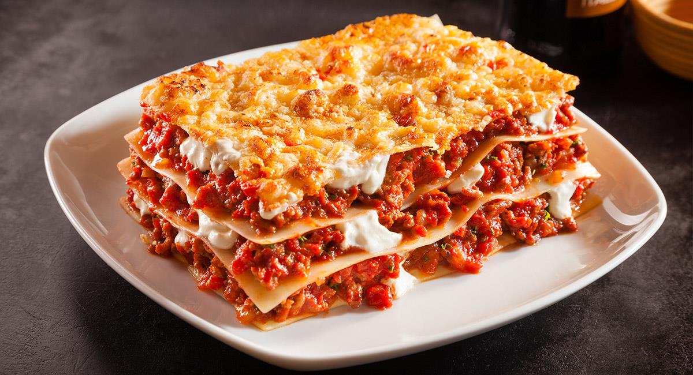

Como te decía un clásico en la mesa italiana, sabrosa, perfecta y digna de reyes, de hecho, a Fernando II de Borbón, se le conocía por el sobrenombre de Rey Lasaña, por su pasión por este plato. La composición que hoy disfrutamos es el resultado de muchos cambios que han ido haciendo cocineros de todas las épocas que buscaban la armonía entre las capas de pasta, salsas y queso.
